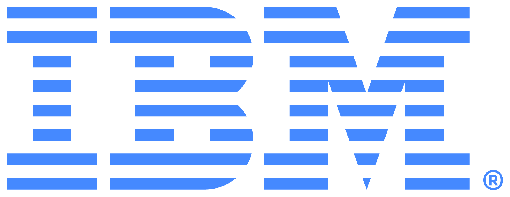
IBM, Decision Intelligence (in progress...)
Turn business policies into AI-authored decisions.
Product Manager @IBM Data, AI & Automation


Turn business policies into AI-authored decisions.
AI restoration engine for ecological planning.
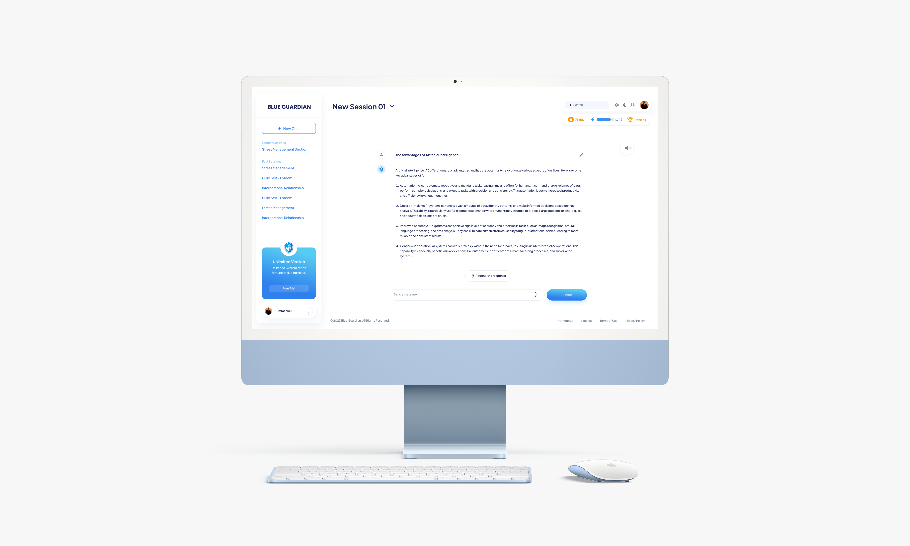
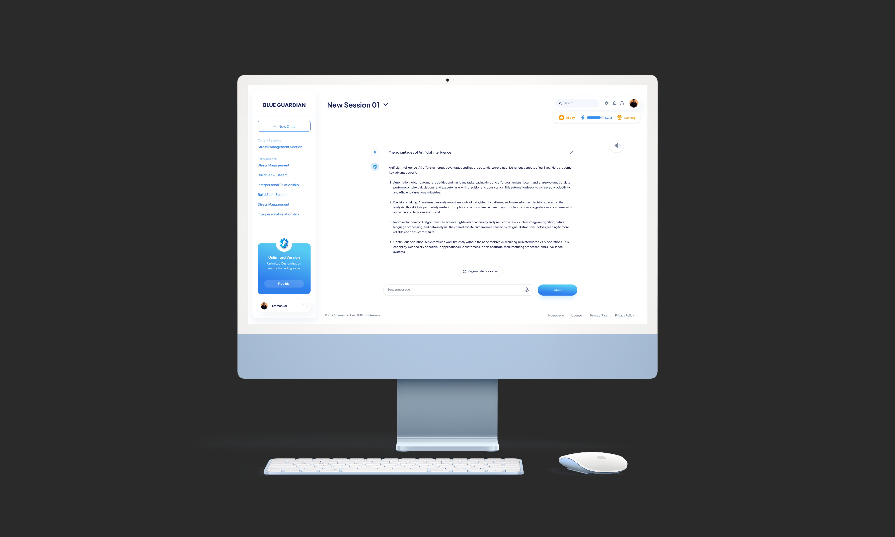
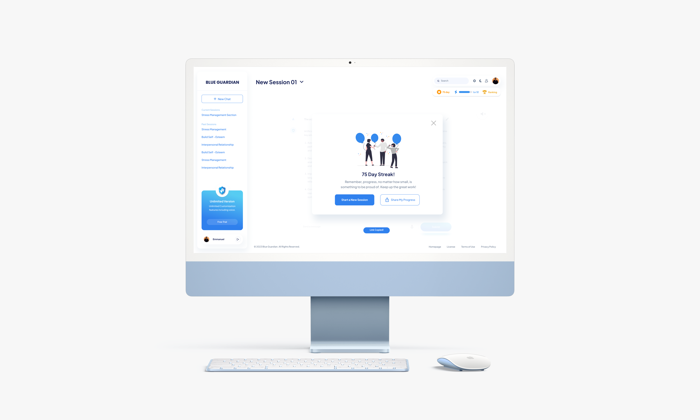
Mental health and wellness support for youth.
Optimizing professional training for global learners.
Product Manager @IBM Data, AI & Automation
Automating business decisioning through agentic AI.
AI restoration engine for ecological planning.
Mental health and wellness support for youth.
Optimizing professional training for global learners.
From pixels to people, I build products with innovation and heart.
I think good products start with paying attention — to people, to context, and to the little things.
When things feel unclear, I slow down, ask questions, and help bring some order to the chaos. I like to map out the logic before jumping to conclusions, which helps me spot what users need and catch gaps the team might miss.
When I'm not building products, I'm dancing in empty gyms, tripping over tennis balls, picking up golf, or filming vlogs I rarely edit. I'm always chasing new hobbies, sometimes successfully, sometimes chaotically, but always with curiosity.
Outside of work, I share thoughts on the things I build, life, and whatever else I am up to. You'll find some of them here!
The RAG-powered AI restoration engine for ecological planning.
In early 2026, our team inherited a half-built prototype and a brief that had more ambition than direction. Four months later, we shipped Wildlight — a RAG-powered AI web app that turns private yards into connected pollinator habitats.
Wildlight soft-launched in April 2026, and it was showcased at Web Summit Vancouver in May 2026. It's now live here.
Many gardeners are actively trying to support local biodiversity by converting lawns, seeking out native plants, and making space for pollinators. The interest is growing. What isn't keeping up is accessible, tailored guidance.
Native pollinator gardening requires site-specific expertise: which species suit your soil, your sun, your region. Generic resources fail to answer these questions, and localized ecological expertise is hard to access. As a result, most people give up before a single plant goes in the ground.
Accenture had already recognized this gap and started building toward it. When we picked it up, we discovered more.
Decision 01
The inherited prototype had features spread across too many directions with no clear north star. Before touching a line of code, I organized three parallel research tracks:
Interviewed gardeners across experience levels and synthesized recurring blockers.
Evaluated AI recommendation approaches and RAG as a grounding mechanism.
Prioritized the product requirements to define a MVP baseline for launch.
The original brief asked for more than the timeline could support, so rather than under-delivering, we used our discovery findings to prioritize: 6 features in, 5 moved to a structured backlog, with 2 stretch goals to pursue if time allowed.
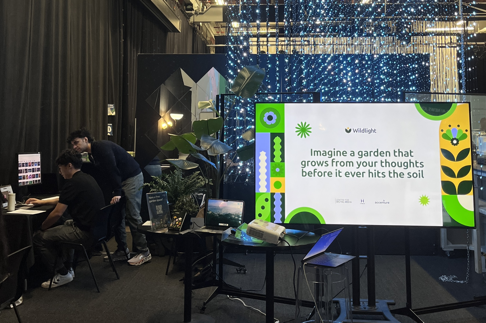
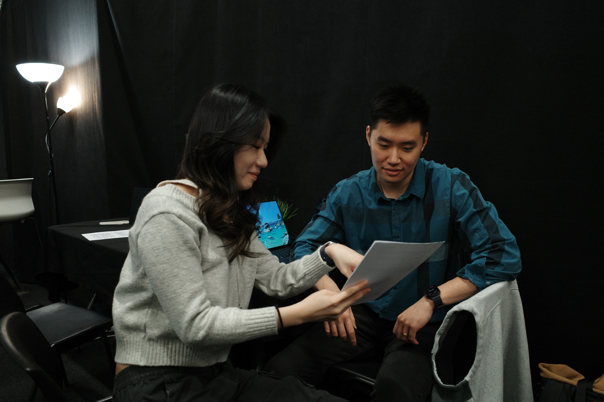
To validate these decisions during development, we built two usability testing cycles into the plan as decision gates. With executive alignment secured on this structure, we moved forward with a shared definition of done.
Decision 02
The original product direction placed AI after the intake: complete a static questionnaire about your yard, then the AI generates a plan. It looked like a form, so users treated it like one.
Usability testing, Feb 9, 2026 · n = 20
We brought this testing data to pitch a flow reversal, moving the AI to the very first interaction. Instead of a rigid questionnaire, the AI now acts as a conversational guide, helping users assess their yard conditions accurately before generating any recommendations.
Site
Assessment
AI
Exploration
Plan
Suggestions
Export
Plan
The new flow eliminated blind guessing and provided the RAG engine with the exact site data needed to succeed. Users who engaged with it rated the interaction 4.5 out of 5 on naturalness.
Decision 03
Generating a plan does not mean the questions stop. Users reached the final page facing unfamiliar plant names and unclear instructions, but most users never found it.
In usability testing, users who engaged with the AI chat rated it most valuable, but it ranked last in discoverability of any feature on the plan page.
Usability testing, March 10, 2026 · n = 20
The data revealed a structural flaw. We built an AI-first interface, but put the AI chat on a separate page that users had to leave their plan to reach. The support layer and the product were not connected. Users were dropping off right when they needed help.
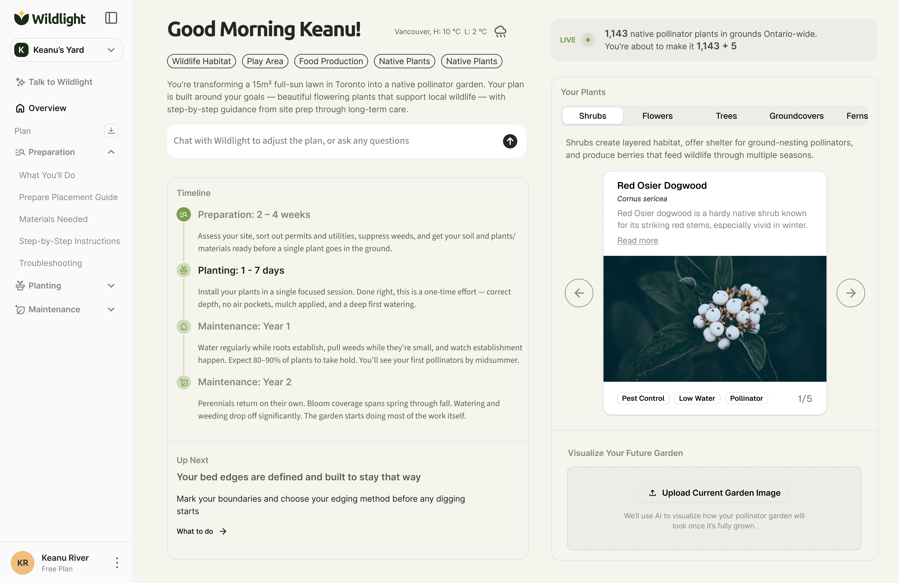
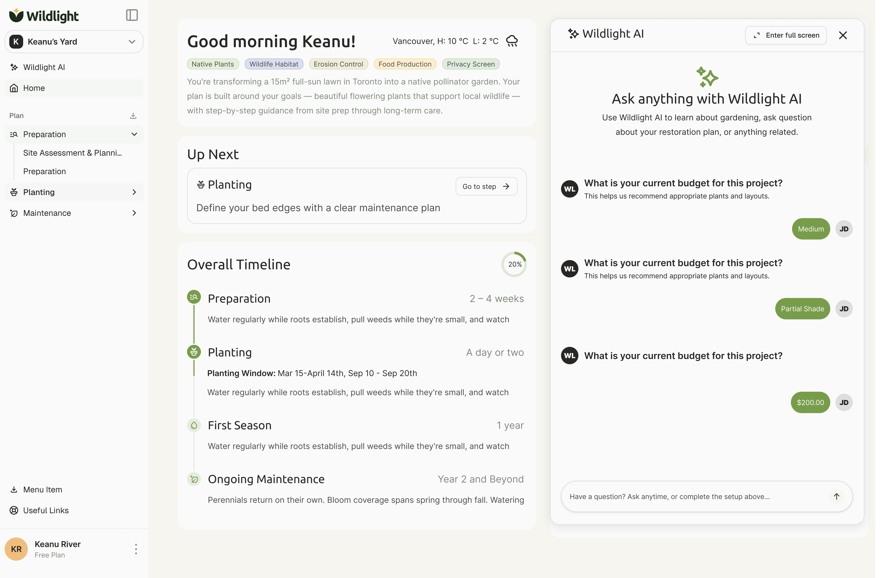
After aligning the team on what that gap was costing us, we moved the chat into a persistent panel embedded in the plan. This closed the user loop and eliminated the visual blocker. Users now have a complete, uninterrupted journey from their first question to the final plan.
Our team successfully delivered 6 core features and 2 stretch features within a 4-month development cycle. Following its initial rollout in April 2026, Wildlight was showcased at Web Summit Vancouver in May 2026. You can interact with the live product here .
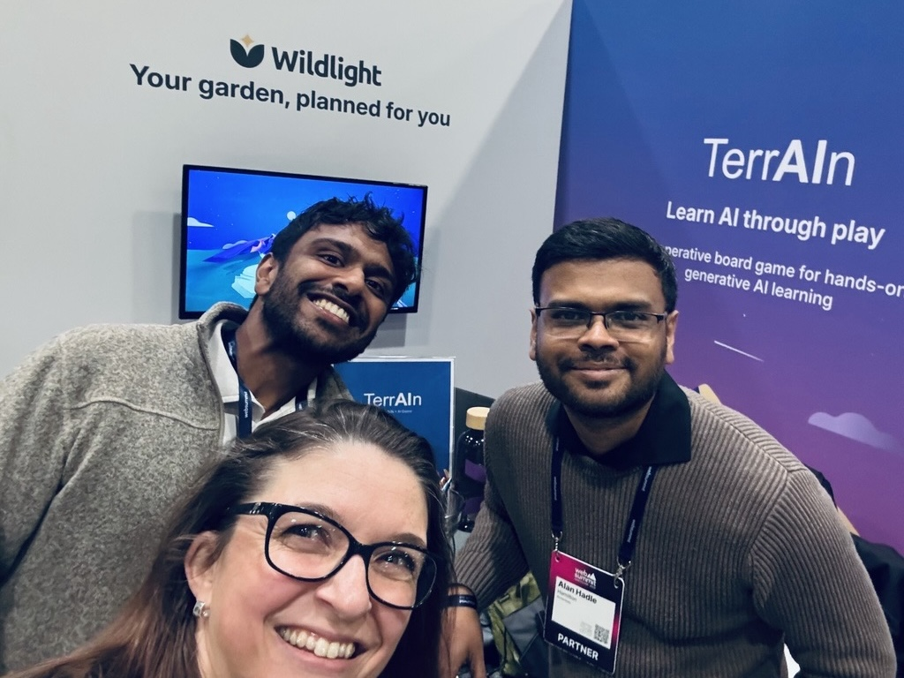
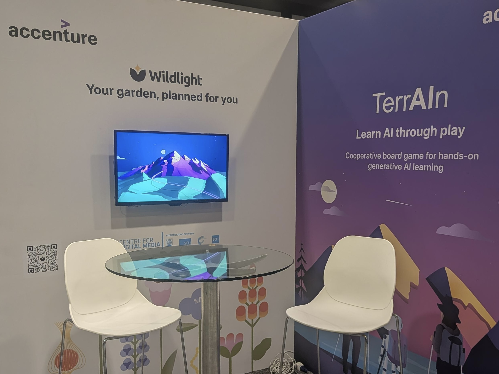
A frictionless UI means nothing if it collects bad data. If users guess their way through questions they don't understand, the AI has nothing reliable to work with. The intake experience determines the quality of everything that comes after.
Saying yes to a timeline means saying no to scope early and explicitly. Without a shared definition of done, design optimizes for polish while engineering optimizes for completion. Hard boundaries are what keep a team building the same product.
If a product requires knowledge users don't have, they won't pause to acquire it. They'll choose the most plausible answer and move on. Products need to meet users exactly where their knowledge ends, not where the domain expects it to begin.
The conversational AI platform for youth wellness support.
Blue Guardian is now closed after two years of operation. The product and website are no longer active, but I had a great time building it and learned a lot throughout the process!
In late 2023, I joined Blue Guardian as the sole founding designer to build a generative AI wellness platform for youth. Over an 8-month cycle, I owned the product's end-to-end user experience, designing the core conversational interface and executing a zero-budget growth strategy to acquire our initial users.
Traditional clinical care is restricted by high costs and long waitlists. On top of that, social stigma creates a massive psychological barrier, causing most people to give up before taking the first step to look for help.
In Canada, 26% of youth report poor or fair mental health, but more than 1 in 3 who need support never receive it.
Statistics Canada & CIHI, 2023-2024
Blue Guardian wasn't built to fix the system. It was built for the moment before people decide to try. We focused on the friction occurring before clinical care even becomes an option: the lack of a low-stakes, accessible space where young people can reach out to support.
Decision 01
By 2023, general-purpose LLMs were increasingly being used for mental health support.
Common Sense Media, 2024
However, most AI models are not optimized for emotional contexts. They rely on a rigid response style that fails to adapt to users' emotional states. Someone who's panicking and someone who just needs a push have completely different needs. Applying one default tone creates an immediate mismatch that triggers user drop-off.
The well-intentioned provision of support may backfire and lead to worse outcomes when the supportive behavior doesn't match the needs of the recipient.
Selcuk & Ong, Health Psychology, 2013
This limitation created the core product gap. Blue Guardian offered different response modes based on emotional context, letting the conversation surface which one fit rather than asking users to decide upfront before interacting.
User
Message
Emotion
Detected
Response
Options
AI
Adapts
Other AI goes directly from step 1 to a fixed-tone response.
Decision 02
With no advertising budget, reaching our initial users felt nearly impossible, especially since the target audience are rarely proactive about seeking help. If they weren't going to find us, how could we find them?
User research pointed to a consistent pattern: people are more likely to seek support in environments they already feel comfortable in. That shaped how we thought about the channel.
We reached out to campus peer accounts that were student-run, free to partner with, and followed by thousands of incoming students. I designed marketing assets for these partnerships.


We acquired 300+ users within the first weeks of launch, with 0 spend on traditional marketing.
Decision 03
Acquiring users was only the first challenge. The next question was whether they'd come back.
Early onboarding sessions showed that users made trust decisions extremely quickly, especially in emotionally vulnerable moments. If the experience felt overwhelming, clinical, or emotionally cold, engagement dropped almost immediately.
When brand logos were blue, 74% of participants classified the brand as trustworthy, compared to just 50% for red.
Su, Cui & Walsh, Journal of Marketing Theory and Practice, 2019
The interface was intentionally designed to reduce emotional friction during onboarding. Soft contrast, rounded components, and calmer visual hierarchy helped the product feel more approachable during the first interaction.

Users consistently described the onboarding experience as approachable rather than clinical. This friction reduction served as a direct lever for early retention, transforming visual design into a product decision rather than just an aesthetic choice.
Blue Guardian launched and reached 300+ users within weeks, with zero advertising spend. The product was later featured in Maclean's for its approach to AI-driven youth mental health support.
Maclean's, 2024
Read articleUsers don’t experience value unless they stay long enough to find it. Blue Guardian reinforced that trust isn’t something layered onto a product after it’s built. It shapes whether users engage with the product in the first place.
A product can’t create impact if users never encounter it. This project pushed me to think beyond features and consider where trust already existed, and how distribution could become part of the user experience itself.
Some of the most consequential decisions weren’t new capabilities. They influenced discovery, onboarding, and trust. Working on Blue Guardian reminded me that product success is often shaped by the experience around the feature, not just the feature itself.
Designing blended-learning content and feedback systems for NUS-ISS.
In summer of 2023, I joined the Institute of Systems Science at the National University of Singapore, one of Asia's top-ranked institutions, as a Digital Innovation and Design Research Assistant.
Working alongside 4 senior lecturers, I drove curriculum and experience design for 2,000+ working professionals across government, finance, and enterprise, with outputs adopted into all subsequent programme runs.
Blended learning for working professionals sits in an awkward middle ground. Learners arrive motivated, but generic content and a lack of personalised feedback quickly erode that. Most programmes have no way of knowing when, or why, engagement drops off.
NUS-ISS was no exception. The programmes were reaching thousands of professionals across government and industry, but the experience had not kept pace with who these learners actually were or what they truly needed from it.
Decision 01
NUS-ISS had experience running online courses, but for students, not professionals. When blended learning expanded to serve working professionals, the existing model no longer fit.
Early conversations with learners and programme staff highlighted a different set of needs and expectations. Unlike full-time students, working professionals learn after hours, balance jobs and personal commitments, and expect content they can apply immediately.
By aligning on the needs of professional learners first, we established a clearer direction for how blended learning content should be structured, delivered, and evaluated.
Decision 02
Traditional classroom learning relies on instructors to guide discussions, answer questions, and keep learners engaged throughout a session. In a blended learning environment, that support becomes less immediate, placing greater responsibility on the content itself.
Working professionals preferred content that was visual and concise, and flagged long-form reading as a barrier to completing modules.
Learner survey · NUS-ISS blended learning · n = 200+
Coursera, Drivers of Quality in Online Learning (2020)
These findings shifted our focus from creating more content to redesigning how content was delivered. We introduced a mix of videos, visual references, and interactive exercises that working professionals could fit around a full schedule and apply immediately.
Storyboarded and animated a short teaching video that translated UX concepts into practical workplace scenarios.
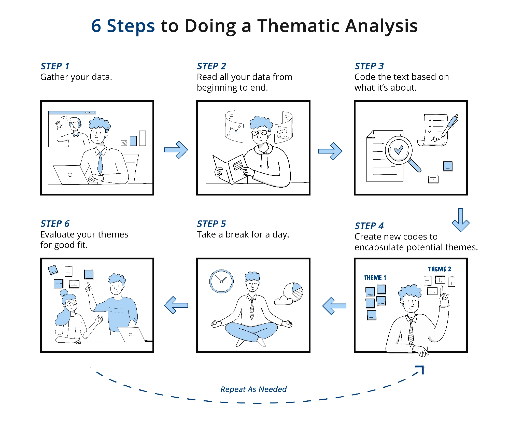
Designed a step-by-step infographic that turned thematic analysis into a quick-reference visual for review after class.
The framework was adopted across all subsequent programme runs, reaching over 2,000+ learners across NUS-ISS's blended learning portfolio.
Decision 03
After each session, learners completed surveys, but the feedback rarely informed future decisions. Programme staff reviewed responses manually, and instructors often relied on individual observations rather than aggregated learner feedback.
The problem wasn’t a lack of feedback. It was that the feedback was invisible.
We consolidated survey responses into a single dashboard that surfaced trends across cohorts, making it easier for instructors and programme staff to identify patterns that were previously buried across hundreds of individual survey responses.
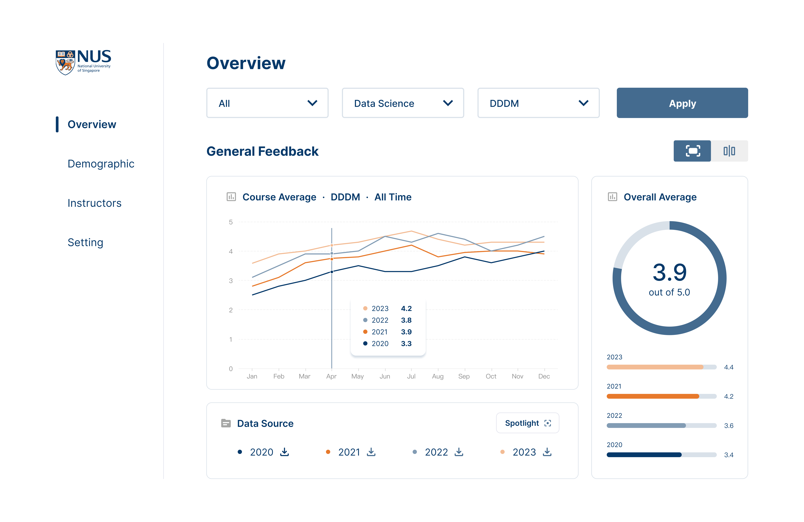
Staff could filter feedback across programmes and years, track certification trends, and monitor overall satisfaction without manually consolidating survey data.
By making learner feedback visible and actionable, the dashboard reduced reporting time by 50% and saved more than 100+ staff hours annually.
Across one summer, the team transformed a traditionally instructor-led programme into a scalable blended learning experience. The outputs was adopted across subsequent programme runs and became part of how NUS-ISS delivered professional education.
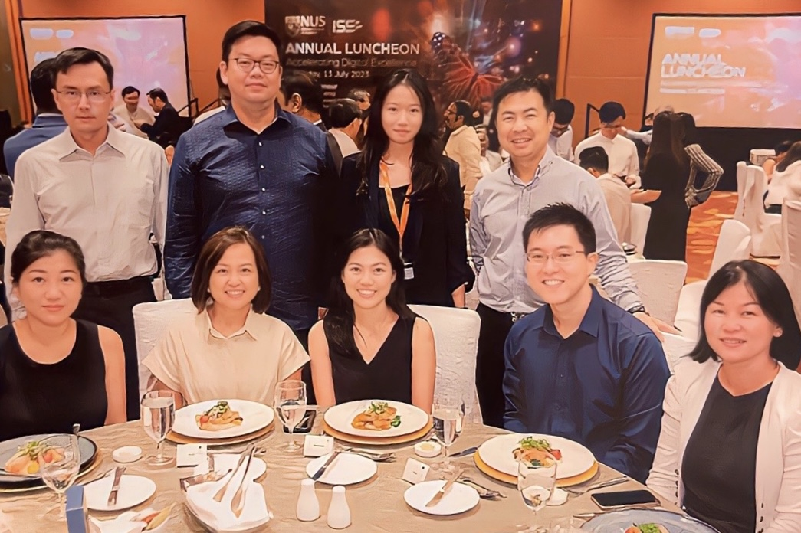
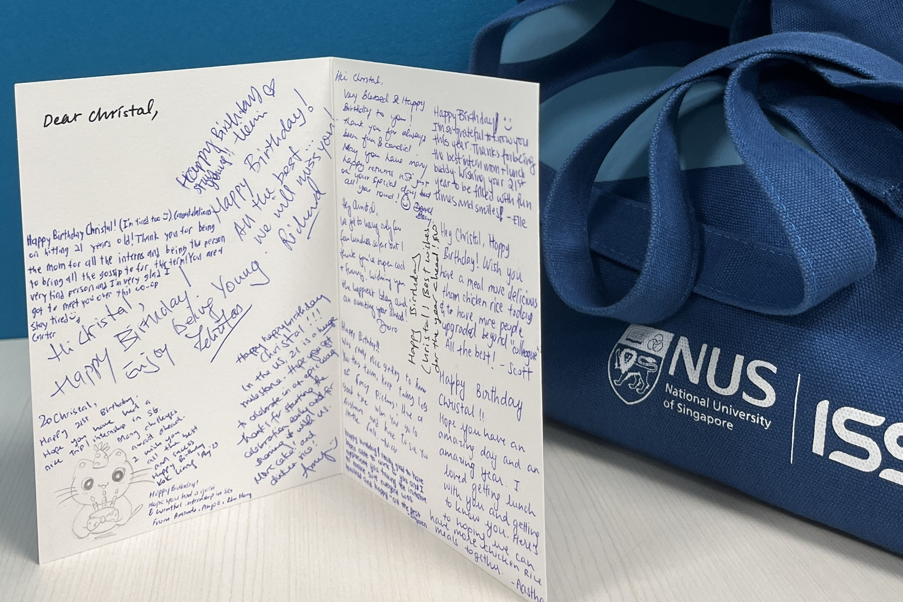
Many of the challenges in this project weren't caused by missing features or missing content. The biggest opportunities came from improving how existing systems worked together more effectively over time in practice.
The feedback already existed. The challenge was making it visible enough for teams to use. That experience changed how I think about analytics, reporting, and decision-making systems in everyday practice and team settings.
Success became easier to define once we stopped comparing professional learners to students. The challenge was never how to move classroom content online. It was understanding that the audience, expectations, and measures of success had fundamentally changed.